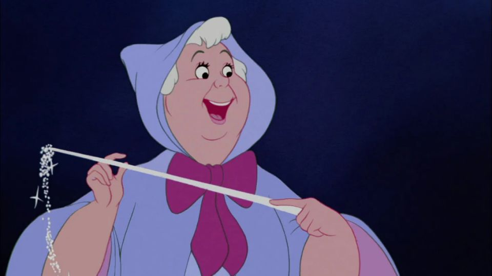

Prince Charming
He is my husband. He is humorous, vital, and enjoy ballroom dances. He is a very romantic person who can genuinely dedicate for me. I realized when he said that all he wants is love as real as the one his parents had shared to me.
Cinderella Father
My dad loved me with all his heart and lavished every possible care. His grand château attested to his great wealth. My mom had died when I was very young. He was depressed by my mom died and felt I needed a mothers' care, so he remarried. However, after his death, I dealt with some hardship and trouble with Lady Tremaine and her daughters.

Fairy Godmother
The Fairy Godmother supported so much when I was not prepared to go to the ball even I wanted to. She is the physical embodiment of hope; she is a kindly fairy devoted to making dreams a reality for the pure-hearted and noble—an act made possible by proclaiming the magic words, "bibbidi-bobbidi-boo". She was the one who created magic dress and glass shoes, and she also transforms a pumpkin into a beautiful carriage and mice into horses.
Jaq and Gus
They are my best buddy; they are always working as a pair. Jaq is the fearless and quick-witted brains of the outfit, acting as the household mischief leader. Gus, meanwhile, is a slow-witted bruiser with an excessive appetite. Both Jaq and Gus can speak using "Mouse Latin"—they commonly distort words, most notably Cinderella's name as "Cinderelly".
Anastasia Tremaine
Anastasia Tremaine is my younger stepsister, the younger sister of Drizella Tremaine, and the youngest daughter of Lady Tremaine. Anastasia was a little bit mean, but after I got married, she eventually abandons her mother and sister and sets out to become a better and more considerate person, and closer to me.
Drizella Tremaine
She is my step sister, and she is Anastasia's biological older sister. Somehow, she feels very jealous because she does not think she is pretty enough by comparing herself with me. I wish one day she finds out her inner beauty and peace.
Anastasia Tremaine
Lady Tremaine is the cold-hearted stepmother. Lady Tremaine doesn't harm me physically. Instead, she seeks to punish and abuse me psychologically, motivated by Cinderella's jealousy being far more beautiful and graceful than her awkward daughters, Anastasia and Drizella. Lady Tremaine was also a socialite, determined to gain higher status by marrying one of her daughters to my husband.